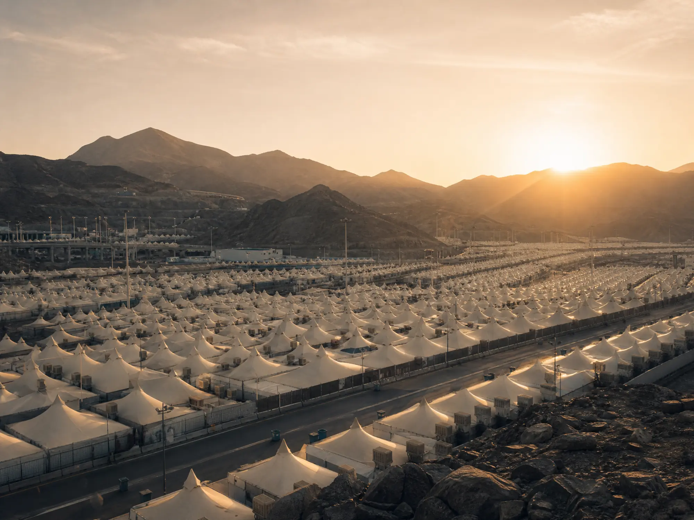

Check passports and choose your route
Passports need six months' validity (for Pakistan's Hajj 2027 scheme, until 16 November 2027). Decide Hajj or Umrah, and how you will book: Nusuk Hajj from the UK or the scheme in Pakistan.
PassportRoute
Practical Hajj and Umrah guides for pilgrims from the UK and Pakistan: the rites step by step, visas, Nusuk, health, packing and what to ask before you book.

Ihram · Tawaf · Sa'i · Halq — in order, with duas
Read the guide
8–13 Dhul Hijjah · Arafat on Saturday 15 May 2027
Read the guide
What men and women wear, and what changes once you say Labbayk
Read the guide
Jeddah is inside the boundary — be ready before you land
Read the guide
Talbiyah · Tawaf · Safa · Arafat — Arabic, transliteration, meaning
Read the guide
eVisa or Umrah visa, plus your free Nusuk permit
Read the guideOne official route: register, choose, pay on Nusuk Hajj
Read the guide
179,210 places · government or private scheme
Read the guide
Mahram rules, Ihram, periods and comfort, answered
Read the guideBook the Rawdah on Nusuk · Quba · Uhud · al-Baqi
Read the guide
Weather, crowds, Ramadan 2027 and price, month by month
Read the guideACWY certificate · heat · medicines · after you return
Read the guideThe complete checklist, plus the Mina day bag
Read the guide
Which one you'll perform, and why most pilgrims choose Tamattu'
Read the guideHira · Thawr · al-Mu'alla · Tan'eem · Arafat
Read the guidePassport · visa · Nusuk · ACWY · insurance
Read the guideMaktab, hotels, rooms, meals — read past the headline price
Read the guideFake Hajj visas, unofficial payments and how to check
Read the guideWhat to do, and when, with the guide for each step.
Passports need six months' validity (for Pakistan's Hajj 2027 scheme, until 16 November 2027). Decide Hajj or Umrah, and how you will book: Nusuk Hajj from the UK or the scheme in Pakistan.
Compare packages by Maktab, hotels and exclusions (our checklist), then sort your visa and Nusuk account.
Get your meningitis ACWY vaccine (at least 10 days before arrival, ideally much earlier), and start walking every day. Health guide.
Read Umrah step by step and Hajj day by day, learn the duas, and work through the packing list.
If you fly to Jeddah, you must be in Ihram before landing. Where is the Miqat on my flight?
Rules, visa routes, health requirements and Hajj booking arrangements change from season to season. We check our guides regularly, but always confirm with the official Saudi, UK and Pakistani sources for your passport and dates.
Ask us anything about Hajj or Umrah. There's no such thing as a small question.